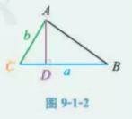

图片来源
(1)如图9-1-2所示, 已知△ABC中, a=5, b=3, ∠C=$\pi \over 3$, 你能求出这个三角形的面积吗?
S△ABC = $1 \over 2$ a * AD;
AD = b * sin$\pi \over 3$
∴
S△ABC = $1 \over 2$ab sinC
= $1 \over 2$ * 3 * 5 * $\sqrt 3 \over 2$ = $15\sqrt 3 \over 4$
S△ABC =
$1 \over 2$ab sinC =
$1 \over 2$ac sinB =
$1 \over 2$bc sinA
⇒
$a \over sin A$ =
$b \over sin B$ =
$c \over sin C$ =
2r(外接圆直径)
正弦定理: 在一个三角形中, 各边的长和它所对角的正弦的比相等,
等于2r(外接圆直径).